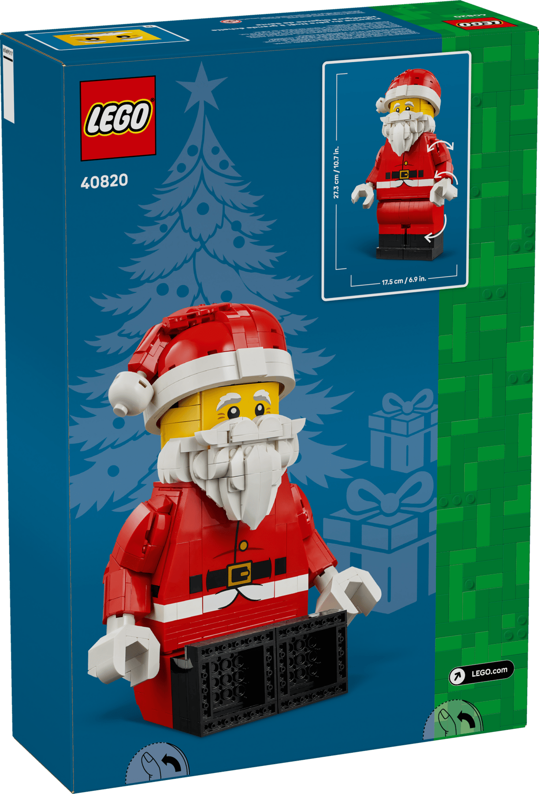

Grote minifiguur van de Kerstman
★★★★★
Grote bouwbare minifiguur van de Kerstman met klassieke rode outfit, muts en witte baard, met beweegbare armen en geschikt om zittend of staand te displayen.
€ 59,99richtprijs, kan wisselen
Bouwinstructies (PDF) →
Deze pagina bevat affiliate links naar bol.com en/of Amazon. Als je via zo'n link iets koopt, ontvang ik mogelijk een kleine commissie — zonder extra kosten voor jou. Zie de disclaimer voor meer info.